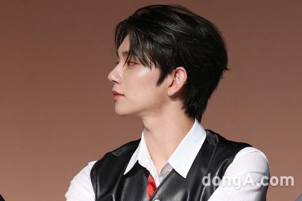

대한민국의 싱어송라이터 가수.
플레디스 엔터테인먼트 소속 13인조 보이그룹 세븐틴의 멤버이며,보컬팀 [1] 소속이고 서브보컬을 맡고 있다. 미국 캘리포니아 주 LA 출신의 한국계 미국인 2세이다. 한인타운에서 열린 "장터"라는 행사에 놀러 갔다가 관계자에게 캐스팅이 되었으며, 오디션 결과를 기다린 지 한 달만에 합격 소식과 함께 "한 달 동안 한국에 공짜로 머물게 해주겠다."는 말을 들은 조슈아는 곧장 한국으로 들어와 2013년 플레디스엔터테인먼트에 입사한다. 미국에서 태어나고 18년을 살았던 지라 연습생으로 들어왔을 당시 한글을 읽고 쓰는 것이 아예 불가능했다.또 허리를 숙여 인사하는 법을 몰라 손윗사람에게 손을 흔들며 "Hi~"라고 인사하는 등 한국 문화도 전혀 알지 못했다. 때문에 입사하자마자 버논에게 한국어를 배우기 시작했고 그 외 멤버들과 숙소 생활을 하며 한국 문화를 익히게 된다. 직접 "아직 한국어보다 영어가 편하다."라고 말하기도 했으며, 영어를 가르쳐 달라는 버논의 제안에 자신도 영어를 까먹지 않기 위해 서로 영어를 쓰기로 약속했다고 한다. 자세한 내용은 세븐틴TV 항목의 지수 문단 참조.
노래는 이전부터 계속 즐겨 불러왔으나, 가족이 모두 사업을 하고 있어 만약 캐스팅을 받지 않았다면 자신도 고등학교 때 배운 회계로 사업을 했을 것이라고 인터뷰에서 밝힌 바 있다. 미국에서 교회를 다니며 기타를 쳤기 때문에 기타 실력이 수준급이고 기타를 이용한 편곡에도 대단히 능한 멤버로, 보컬팀의 '아낀다' 등을 직접 어쿠스틱 편곡하기도 했다.
